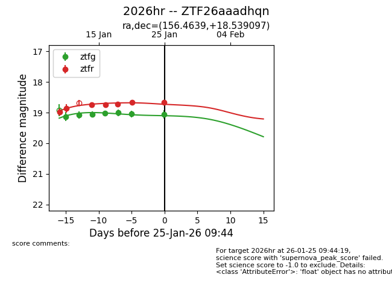
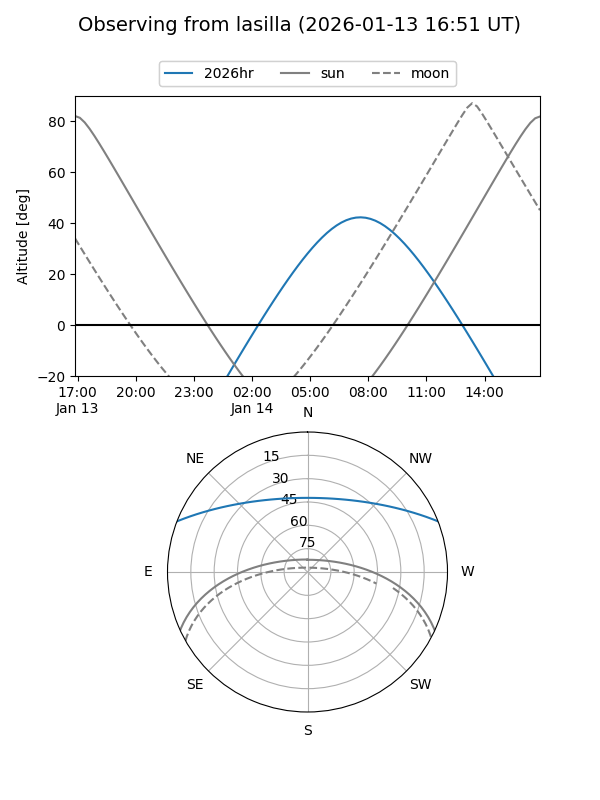
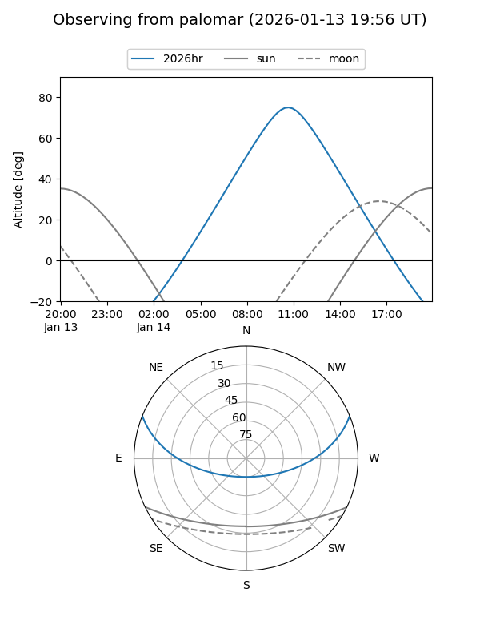
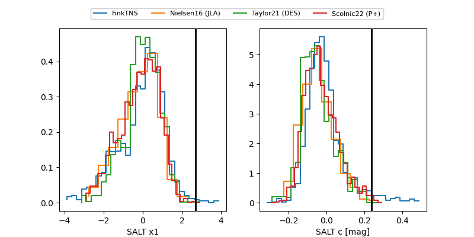

2026hr
Target 2026hr at 2026-01-09 11:23
Aliases and brokers:
FINK:
Lasair:
ALeRCE:
TNS:
YSE:
alt names
ZTF26aaadhqn (ztf,fink_ztf)
2026hr (tns,yse)
Coordinates:
equatorial (ra, dec) = 156.4639,+18.53905
equatorial (HMS+DMS) = 10:25:51.33,+18:32:20.58
galactic (l, b) = (219.5248,+55.50661)
Flags:
Photometry:
last ztfr=18.98
1 ztfr detections
Lightcurve

Visibility


Additional plots
